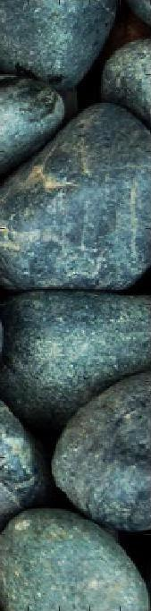
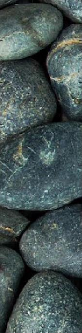
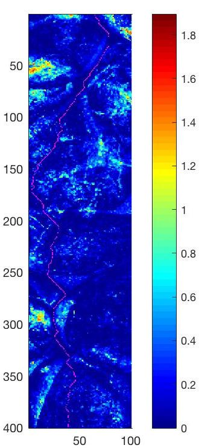
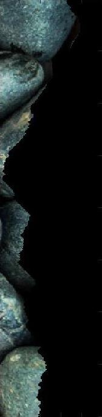
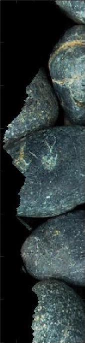
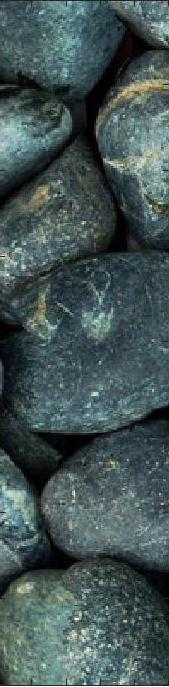

First texture synthesis result is a photograph of Yayoi Kusama's
painting of white Infinity Nets. You can see that the randomly
sampled texture has lots of unnatural edges. For the simple quilt
algorithm that calculates the SSD, there are less edges, but we can
still see some edge artifacts. The best result is the quilting
algorithm that incorporates seam finding. The texture synthesis algorithm
begins choosing a random patch from the sample. It then generates the
first row and column based on the first patch and the subsequent
patches using the SSD. Wherever two patches overlap, the algorithm uses
a seam finding method to find the best path through two overlapping pieces
cut through.
Here I am showing the overlapping section between the template and
the sample. The red line in the cost image shows the minimum cost cut
that the algorithm found. Dark blue indicates lower cost and red and
yellow indicate higher cost. After cutting both the template and the
sample using the path found, we stitched together the sections and
the result looks seamless.

Template

Sample

Cost image

Template with cut

Sample with cut

Result
I would consider this one a fail. I found that textures with faces on them
are very difficult to make it look natural through this algorithm. Although
I removed most of the unnatural edges, some of the faces are cut off and
joined to others.
I took the sketch texture and transferred it onto the image of Feynman.
Texture transfer works similarly to the quilting algorithm I described
earlier. The main difference is that I took the constraint image, converted
it to grayscale, and added a new cost to the SSD calculation. The new
cost measures the SSD between the intensities of patches from the
texture image and the constraint image.